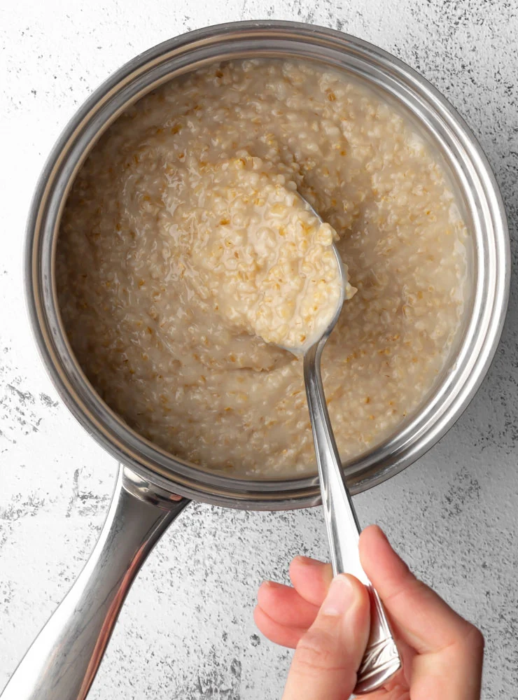

Maple and Brown Sugar Oatmeal
Ingredients
- 1 1/2 cups water
- 3/4 cup quick oats
- 1 tablespoon packed dark brown sugar
- 1 tablespoon maple syrup
Cooking Instructions
- Bring water to boil in small pot. Add oats and cook,
stirring for 1 minute
- Remove from heat and stir in brown sugar and maple syrup.
Let sit until desired thickness is reached, 2 to 3 minutes.